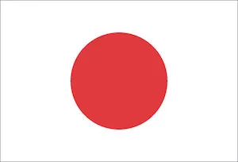
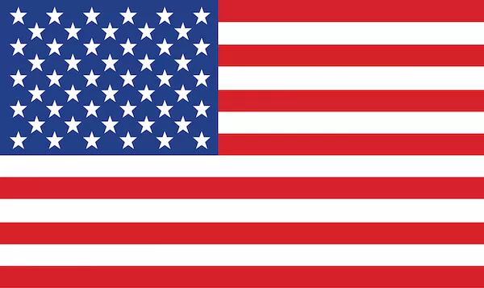
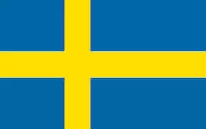
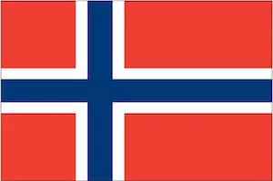
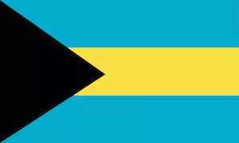
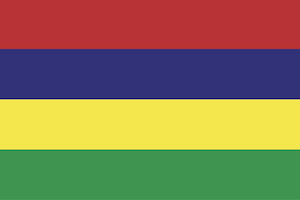

World Flags
Özkan ÖZLÜ
Advanced Academic Speaking Skills
Final Presentation
20/12/2022
Outline
- The reasons of flag usage
- Why are there so many different world flags?
- The most common symbols on flags
- The meaning of the colours on the flags

Other important flags to know
Olympic Flag
EU Flag
Universal Symbols in the Flags
Sun

- Unity and energy
- Bangladesh, Kyrgyzistan, Kazakhistan, Namibia
Moon/Crescent
- Divinity and Islam
- Particularly in Muslim Countries like Pakistan, Algeria, Malasia
Stars

- Constellations of stars often represent energy
- Other countries: Australia, New Zelland, and etc.
Cross


- First, represented four points of the compass
- Later, started to represent faith
- Other countries: England, Greece, Denmark, Finland, and etc.
Triangle

- Presents Trinity
- Power and strength
- Other countries: Eritrea, Sudan, American Samoa, and etc.
Square
- Only square flag
- Balance and equal opposites
- Red Cross uses the inverted colored flag
Symbols, Shapes and Colours
Use of Colours in Flags

Which Colour Says What?
| Colours | ||
Thank You for listening.
Özkan ÖZLÜ